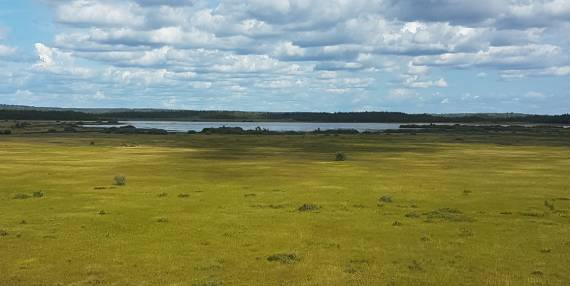
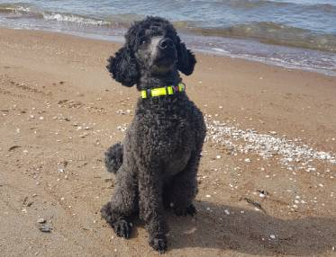

För mig spelar min hund Dusty en stor del i min återhämtning och hon ser till att jag tar pauser och kommer ut i naturen. Så mitt tips är att skaffa en hund, eller vilket djur som, för att få den bästa återhämtningen från en tuff utbildning (eller vardag för all del). Kika på Bilder 2 för att se naturbilder med vattentema och Bilder 3 för skogstema.
 